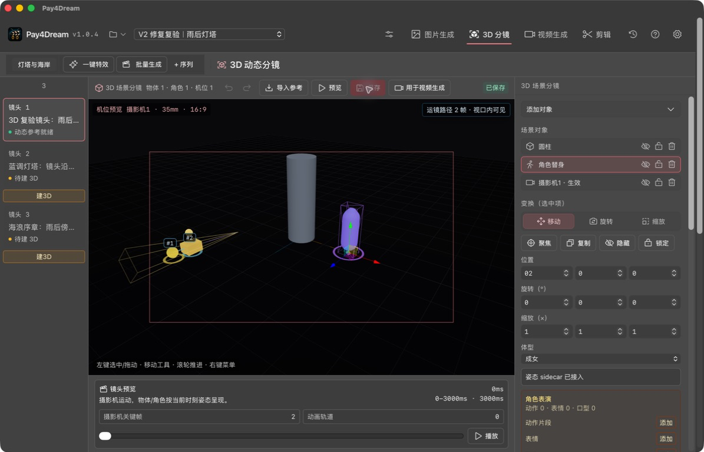
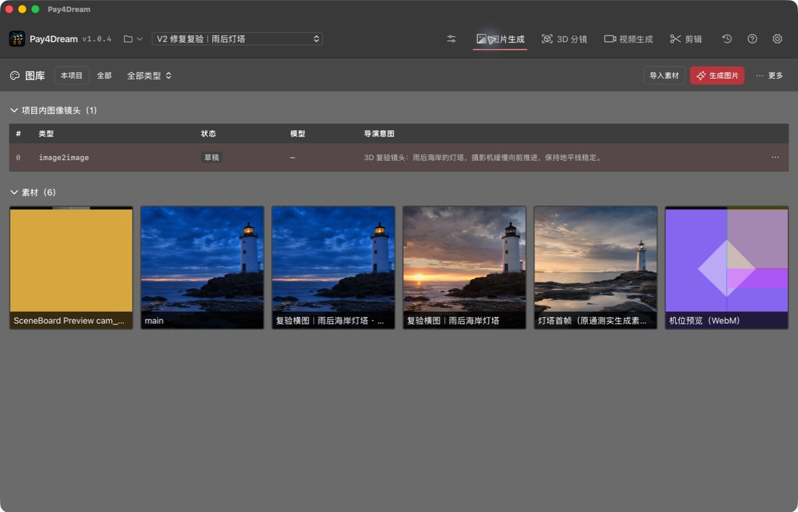

写出方向
描述主题、风格、时长和受众，先形成脚本与分镜骨架，再一步步确认。
为什么需要它
Pay4Dream 用一个本地工作台承接脚本、素材、镜头设计、prompt、生成任务、轨道和导出记录。项目可以反复修改和继续制作，不再散落在多个网页、聊天记录和文件夹里。
工作方式
描述主题、风格、时长和受众，先形成脚本与分镜骨架，再一步步确认。
把角色、场景、物品、参考图、参考视频和音频放进项目资产库，导入、拖入、生成和一键改图都有归属。
在统一 SceneBoard 里管理角色占位、场景道具、摄影机、焦距、关键帧和运动轨迹，再决定静态或动态参考路线。Public 版支持基础场景编辑，不提供骨骼姿态或关节手柄编辑。
3D 分镜 · 1.0.4 历史界面
角色、道具、摄影机、运动轨迹和时间线在同一个 SceneBoard 里汇合。先确认构图、动作和运镜，再把导演意图带入视频生成。

适合的团队
把选题、脚本、素材生成和剪辑输出放在同一个项目中，减少跨工具搬运。
快速把功能卖点、活动物料、文档资料和讲解脚本做成可预览的视频版本。
使用自己的模型账号，项目和素材留在本机，创作节奏由你自己掌控。
自行安装官方 CLI 并登录，检查可用模型后主动启用。支持官方 Seedance 2.5 文生视频路径，账号、会员与密钥不随包提供。
LibTV 默认关闭。每次生成先确认内容与费用，再提交到自己的账号；同一项目连续生成不再因默认节点重名而中断。
生成结果下载并导入为候选，完整预览后再明确采用，继续剪辑、导出；重开项目可继续已采用的工作。
查询已有任务，继续下载或导入结果；恢复操作不会重新提交付费生成，失败原因也更容易定位。
使用程序化胶囊体作为角色占位，支持场景对象旋转与保存；不提供骨骼姿态或关节手柄编辑。
保留已有配音与片段时长，改进剪辑恢复、撤销重做和错误展示。历史带水印素材不会自动变成无水印原片。

可控性
每次生成都能落回资产库和任务状态，方便继续挑选、替换、反馈和剪辑。SceneBoard 和参考素材会随镜头继续带入下游制作。
使用前须知
模型服务由你自行配置并承担费用。LibTV 使用自己的官方 CLI 登录；连接远端服务时，生成所需内容会发送给对应服务。
Public 1.1.0 首次启动可直接进入应用。LibTV 需主动启用并确认扣费；本次不包含 Dreamina 生成、Higgsfield 或新的移动端版本。
下载页提供 macOS 与 Windows 安装包，也保留文件核对信息，方便你确认来源。
开始试用